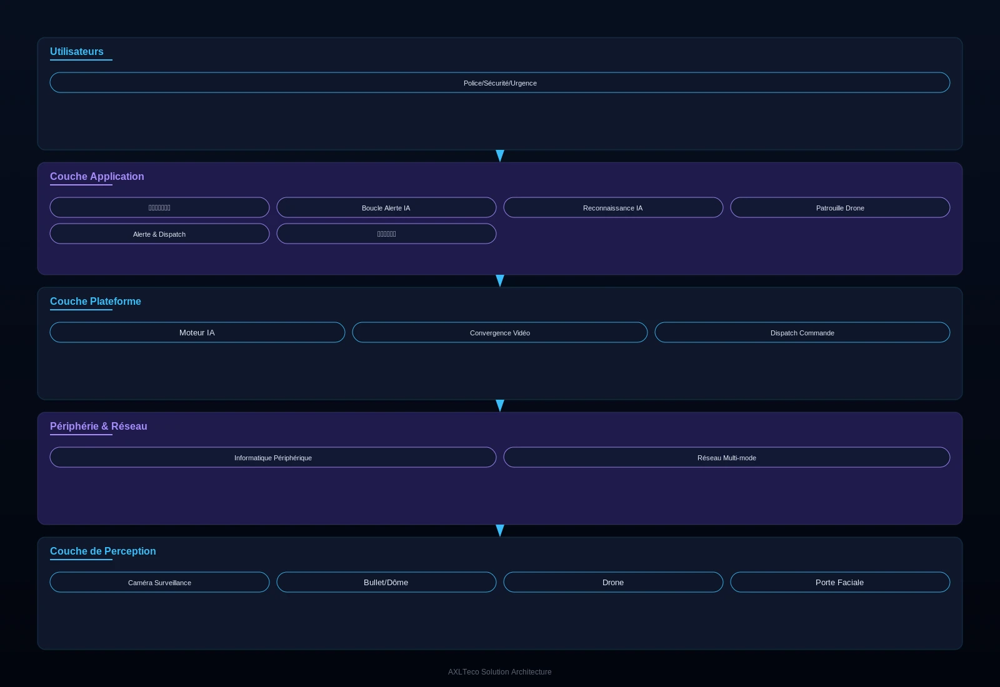

Pour les autorités de sécurité publique urbaine et les exploitants de grands pôles d'échanges, une solution de défense tridimensionnelle associant surveillance en altitude, complément au sol et patrouille aérienne, qui répond aux points de douleur clés que sont la couverture de surveillance insuffisante des zones clés, la lenteur de réponse aux incidents et la faible efficacité du visionnage manuel, réalisant une surveillance vidéo IA panoramique et une boucle de réponse rapide.
Vue d'ensemble
Fournit aux autorités de sécurité publique urbaine et aux exploitants de grands pôles d'échanges une solution de défense tridimensionnelle, répondant à la couverture insuffisante des zones clés, à la lenteur de réponse et à la faible efficacité du visionnage manuel, et réalisant une surveillance vidéo IA panoramique avec boucle de réponse rapide.
Applicable à : Zones urbaines clés, grands sites événementiels, pôles d'échanges, zones de défense forestière contre l'incendie, littoraux.
- Une seule caméra de surveillance en altitude couvre un rayon de 3-5 km, équivalant à des dizaines de caméras ordinaires
- L'analytique IA remplace le visionnage manuel, avec un taux d'exactitude d'alarme supérieur à 95 %
- Liaison avec les systèmes de drones pour une boucle détecter-localiser-intervenir rapide
Bénéfices : Coûts d'exploitation de sécurité réduits, temps de réponse aux incidents raccourci, densité de couverture de sécurité urbaine accrue.
Défis Métier
Dans la sécurité publique urbaine, les clients font souvent face à une couverture insuffisante des caméras, à une faible efficacité de la surveillance manuelle et à des chaînes d'intervention longues ; ils ont besoin d'une défense tridimensionnelle à couverture étendue, avec alertes IA automatiques et réponse coordonnée rapide.
Couverture insuffisante
Les caméras ordinaires couvrent peu par unité ; points hauts et grandes zones laissent de nombreux angles morts.
Surveillance manuelle inefficace
Des masses de flux vidéo regardés par des humains entraînent fatigue et événements manqués.
Chaînes d'intervention longues
De la détection d'une anomalie à l'envoi des renforts, l'information traverse de nombreux maillons lents.
Pas de vue verticale
Les caméras au sol ne voient pas d'en haut ; grands événements et urgences manquent d'une vue d'ensemble, ce qui ralentit les décisions.
Veille en altitude grand rayon
Peu d'équipements doivent couvrir les zones clés sur un rayon de plusieurs kilomètres.
Alertes IA à boucle rapide
Les anomalies doivent être détectées et localisées automatiquement, puis reliées aux moyens d'intervention.
Scénarios typiques :
Rôles concernés : Agents du centre de commandement, responsables sécurité, chargés de l'intervention d'urgence.
Architecture
Conçue sur une architecture en trois couches « veille en altitude – comblement au sol – patrouille aérienne » couvrant surveillance panoramique, analyse IA et commandement, avec intégration aux plateformes de commandement des forces de l'ordre et aux systèmes de drones.

Une seule unité en altitude couvre un rayon de 3 à 5 km en « œil du ciel » ; les points bas comblent les angles morts ; les drones décollent automatiquement après alerte pour ajouter des vues en direct ; le centre de commandement agrège vidéo panoramique et alertes IA pour boucler la chaîne détecter–localiser–intervenir.
Modules clés
Veille en altitude
PTZ à fort zoom et caméras panoramiques 360° sur les points hauts urbains ; une unité couvre un rayon de 3 à 5 km.
Reconnaissance IA
Détection automatique des rassemblements, des stationnements gênants et des fumées, avec une précision d'alarme supérieure à 95 %.
Patrouille relayée par drones
Les drones décollent automatiquement après alerte et diffusent la vidéo en direct depuis les lieux.
Carte d'alertes & coordination
Alertes positionnées sur la carte, vérifiées au mur d'images, moyens engagés en un clic.
Capacités d'intégration :
- Connecté aux plateformes de commandement des forces de l'ordre pour une boucle détecter–évaluer–déléguer–intervenir
- Reconnaissance IA des rassemblements, stationnements gênants, fumées et autres anomalies
- Liaison drones : décollage automatique vers les lieux pour une reconnaissance complémentaire
Avantages & Livraison
Avec le concept de défense « altitude + points bas + air » et l'analyse IA, nous aidons à densifier la couverture et à accélérer la réponse de la sécurité urbaine, avec levés de site, installation des équipements, déploiement de la plateforme et accompagnement opérationnel continu.
Avantages différenciants
Une unité pour des dizaines
Une seule unité en altitude couvre un rayon de 3 à 5 km, réduisant fortement le coût de construction.
L'IA remplace la surveillance manuelle
Précision d'alarme supérieure à 95 % et taux d'oubli nettement réduit.
Boucle air-sol
La liaison drone automatique réalise détecter–localiser–intervenir.
Éprouvée sur de grands projets
Déployée et vérifiée sur de grands projets comme l'échangeur de transport de Mile 2.
Valeur client : Coûts d'exploitation de la sécurité réduits, temps d'intervention raccourci et densité de couverture nettement accrue dans les zones urbaines clés — un « œil du ciel » au service de la sécurité publique urbaine.
Processus de mise en œuvre
Étude des besoins
Définir les zones clés, les types d'événements et les besoins de liaison.
Levé de site
Relever les points hauts, les positions basses et les emplacements des docks à drones.
Installation des équipements
Déployer les unités en altitude, les points bas et les docks à drones.
Déploiement de la plateforme
Mettre en ligne le moteur d'analyse IA et la plateforme de commandement.
Mise en service conjointe
Tester la chaîne alerte–vérification–dépêche–intervention de bout en bout.
Formation & passation
Former les équipes de garde et de coordination, puis assurer la passation.
Garanties de service : Garantie d'un an, accompagnement à distance, stock local de pièces de rechange.
Études de Cas
Le pôle de transport suivant a obtenu une protection tridimensionnelle dans un environnement de circulation complexe grâce à cette solution.
Système de sécurité de l'échangeur de transport de Mile 2
Contexte : Mile 2 est un échangeur de transport de Lagos aux flux denses de véhicules et de piétons, avec une forte pression sur la gestion de l'ordre public.
Défi : Le site est vaste et complexe ; les caméras ordinaires laissaient de nombreux angles morts et la surveillance manuelle ne pouvait repérer les anomalies à temps.
Solution : Des équipements de veille en altitude et de surveillance panoramique ont été déployés avec des points bas, bâtissant une surveillance tridimensionnelle couvrant tout l'échangeur.
Résultats : Une protection tridimensionnelle dans un environnement de circulation complexe, donnant à l'exploitant une vue d'ensemble pour la sécurité quotidienne.